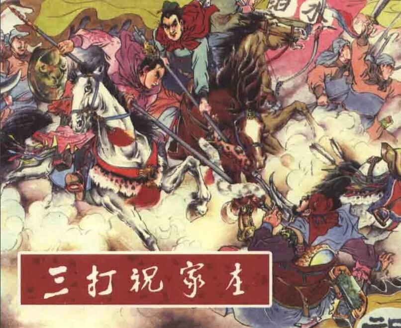

第五十回(选段) 吴学究双掌连环计 宋公明三打祝家庄
Chapter 50 (Selection) Wu Yong Uses a Double Linked Plan Song Jiang’s Third Attack on the Zhu Family Manor

话说当时军师吴用启烦戴宗道：“贤弟可与我回山寨去取铁面孔目裴宣，圣手书生萧让，通臂猿侯健，玉臂匠金大坚。
可教此四人带了如此行头，连夜下山来，我自有用他处。”戴宗去了。
“I want Ironclad Virtue Pei Xuan, the Master Hand Xiao Rang, Hou Jian the Long-Armed Ape and the Jade-Armed Craftsman Jin Dajian,” said Wu Yong. “Tell them to bring their tools and come down the mountain tonight. I need them.”
Dai Zong departed.
只见寨外军士来报，西村扈家庄上扈成，牵牛担酒，特来求见。宋江叫请入来。
扈成来到中军帐前，再拜恳告道：“小妹一时粗卤，年幼不省人事，误犯威颜。今者被擒，望乞将军宽恕。
奈缘小妹原许祝家庄上，前者不合奋一时之勇，陷于缧绁（léi xiè）。如蒙将军饶放，但用之物，当依命拜奉。”
宋江道：“且请坐说话。祝家庄那厮，好生无礼，平白欺负俺山寨，因此行兵报仇。须与你扈家无冤。
只是令妹引人捉了我王矮虎，因此还礼，拿了令妹。你把王矮虎放回还我，我便把令妹还你。”
扈成答道：“不期已被祝家庄拿了这个好汉去。”吴学究便道：“我这王矮虎今在何处？”扈成道：“如今拘锁在祝家庄上。小人怎敢去取。”
宋江道：“你不去取得王矮虎来还我，如何能够得你令妹回去？”吴学究道：“兄长休如此说。只依小生一言。今后早晚，祝家庄上但有些响亮，你的庄上切不可令人来救护。倘或祝家庄上有人投奔你处，你可就缚在彼。若是捉下得人时，那时送还令妹到贵庄。只是如今不在本寨，前日已使人送在山寨，奉养在宋太公处。你且放心回去。我这里自有个道理。”扈成道：“今番断然不敢去救应他。
若是他庄上果有人来投我时，定缚来奉献将军麾下。”
宋江道：“你若是如此，便强似送我金帛。”扈成拜谢了去。
A soldier posted outside the camp entered and reported: “Hu Cheng, from the Hu Family Manor in the west,
is here with gifts of cattle and wine. He asks to see you.”
Song Jiang said to invite him in.
Hu Cheng approached the tent in the center of camp, kowtowed, and offered a sincere plea.
“My sister is young and untutored. In a moment of rudeness she offended you and your generals captured her. I’m here to beg forgiveness. It is because she has been pledged to a son of the Zhu Family that she displayed a misplaced valor and landed in captivity. If you will release
her, whatever you require you have only to command and I will deliver.”
“Please be seated，” said Song Jiang. “That Zhu Family are boors (/bʊə(r)/). They’re always picking on the people of our mountain stronghold. For that reason we’ve come with armed forces to avenge ourselves. We have nothing against the Hu Family. Your sister and her men seized our Stumpy Tiger Wang.
And so we returned the compliment and captured her. Give Wang back to us and you can have your sister.”
“Though we didn’t expect it, the Zhu Family have already taken him.”
“Where is he now?” Wu Yong asked. “Locked up in their manor. I don’t dare ask for him.”
“If you don’t return the Stumpy Tiger, how can we release your sister?” Song Jiang said.
“Don’t talk like that, brother,” Wu Yong urged. “Let me say a few words. Sooner or later the Zhu Family is going to have an alarm. Don’t send people from your manor to help them. If any of them try to take refuge with you, tie them up and bring them here. When you do that, we’ll return your sister. She’s not in this camp. We sent her to our mountain fortress the other day and
entrusted her to the care of Squire Song. You needn’t worry. We have a plan.”
“I wouldn’t dare go to the aid of the Zhu Family. Should any of their people seek refuge with me, I’ll bind them and bring them here to you.”
“If you do that,” said Song Jiang, “it will be worth more to us than any gold or brocade (/brəˈkeɪd/).”
Hu Cheng thanked them and left.
且说孙立便把旗号上改换作“登州兵马提辖孙立”，领了一行人马，都来到祝家庄后门前。
庄上墙里望见是登州旗号，报入庄里去。栾廷玉听得是登州孙提辖到来相望，说与祝氏三杰道：“这孙提辖是我弟兄，自幼与他同师学艺。今日不知如何到此？”带了二十余人马，开了庄门，放下吊桥，出来迎接。孙立一行人都下了马。众人讲礼已罢，栾廷玉问道：“贤弟在登州守把，如何到此？”孙立答道：“总兵府行下文书，对调我来此间郓（yùn）州守把城池，提防梁山泊强寇，便道经过，闻知仁兄在此祝家庄，特来相探。本待从前门来。因见村口庄前，俱屯下许多军马，不好冲突。特地寻觅村里，从小路问到庄后，入来拜望仁兄。”栾廷玉道：“便是，这几时连日与梁山泊强寇厮杀，已拿得他几个头领在庄里了。只要捉了宋江贼首，一并解官。
天幸今得贤弟来此间镇守，正如锦上添花，旱苗得雨。”
孙立笑道：“小弟不才，且看相助捉拿这厮们，成全兄长之功。”
We’ll tell now of Sun Li who changed his banner to read: Sun Li Major of the Dengzhou Garrison. He arrived at the rear gate of the Zhu Family Manor with his company of men and horses.
The soldiers on the walls, seeing the banner, reported to their leaders.
“He’s like a brother to me. Since childhood we learned to play with weapons from the same teacher,” Luan Tingyu said to the three sons of the Zhu Family.
“I wonder what he’s doing here.”
Luan opened the manor gate, lowered the drawbridge, and rode out with twenty men to welcome him. Sun Li and his company dismounted.
They exchanged greetings.
“I thought you’re with the Dengzhou garrison,” said Luan. “What are you doing in these parts?”
“The high command has transferred me here to Yunzhou Prefecture to defend the cities and town against the bandits of Liangshan Marsh. We were passing by and I knew that you were with the Zhu Family Manor, so I came to see how you are. We intended to approach your front gate, but the village entry was full of troops and cavalry (/ˈkævlri/). I didn’t want to disturb them.
I came along the paths through the hamlets to the rear gate to pay my respects.”
“We’ve had one clash after another with those bandits the last few days. We’ve already caught several of their leaders. When we get Song Jiang, their chief, we’ll turn them all over to the authorities. How fortunate we are that you’ve come to protect us!
You’ll be like ‘flowery stitches on brocade’, like ‘rain to parched sprouts’.”
Sun Li smiled. “I have no talent.
But I can assist you to nab those rogues, so that your worthy goal will be achieved.”
栾廷玉大喜。当下都引一行人进庄里来。再拽起了吊桥，关上了庄门。孙立一行人安顿车仗人马，更换衣裳，都在前厅来相见。祝朝奉与祝龙、祝虎、祝彪三杰，都相见了，一家儿都在厅前相接。
Luan was delighted. He led them into the manor, pulled up the drawbridge and bolted the gate.
Sun Li and his party changed into fresh clothes and were presented in the main hall to Lord Zhu and his three sons.
栾廷玉引孙立等上到厅上相见。讲礼已罢，
便对祝朝奉说道：“我这个贤弟孙立，绰号病尉迟，任登州兵马提辖。今奉总兵府对调他来镇守此间郓州。”
祝朝奉道：“老夫亦是治下。”孙立道：“卑小之职，何足道哉！早晚也要望朝奉提携指教。”祝氏三杰相请众位尊坐。
孙立动问道：“连日相杀，征阵劳神。”祝龙答道：“也未见胜败，众位尊兄鞍马劳神不易。”孙立便叫顾大嫂引了乐大娘子叔伯姆两个，去后堂拜见宅眷。
唤过孙新、解珍、解宝参见了，说道：“这三个是我兄弟。”指着乐和便道：“这位是此间郓州差来取的公吏。”指着邹渊、邹闰道：“这两个是登州送来的军官。”祝朝奉并三子虽是聪明，却见他又有老小，
并许多行李车仗人马，又是栾廷玉教师的兄弟，哪里有疑心。只顾杀牛宰马，做筵席管待众人饮酒。
After courtesies were exchanged, Luan addressed Zhu:
“My brother Sun Li is known as the Sickly General. He was major of the Dengzhou garrison,
but the high command has just transferred him here to protect Yunzhou.”
“I too shall be under your supervision, ” said Lord Zhu.
“Scarcely that, with my lowly rank. I shall be looking forward to constant enlightenment by you, and your instructions.”
The three sons invited the guests to be seated.
“You must be weary, after several days of fighting,” Sun Li said to them.
“There’s been no decisive battle as yet,” said the Dragon.
“But you brothers must be tired from your long journey in the saddle.”
Sun Li instructed Mistress Gu and Mistress Yue to go to the rear chambers and pay their respects to the female members of the household.
Then he summoned Sun Xin, Xie Zhen and Xie Bao, and presented them.
“These three are my brothers,” he said. He pointed at Yue Ho. “This is the officer sent from Yunzhou to fetch me.”
Indicating Zou Yuan and Zou Run, he said: “These two are army officers from Dengzhou.”
Zhu and his three sons were clever But Sun Li had come with women and children, luggage and carts. What's more, he was an old friend of Luan Tingyu. Why should they suspect him? They ordered that cows
and horses be slaughtered and a feast be laid, after which the guests were wined and dined.
过了一两日，到第三日，庄兵报道：“宋江又调军马杀奔庄上来了。”
祝彪道：“我自去上马拿此贼。”便出庄门，放下吊桥，引一百余骑马军杀将出来。
早迎见一彪军马，约有五百来人。当先拥出那个头领，弯弓插箭，拍马抡枪，乃是小李广花荣。
祝彪见了，跃马挺枪，向前来斗。花荣也纵马来战祝彪。两个在独龙冈前，约斗了十数合，不分胜败。
花荣卖个破绽，拨回马便走。祝彪正待要纵马追去，背后有认得的说道：“将军休要去赶，恐防暗器，此人深好弓箭。”
祝彪听罢，便勒转马来不赶，领回人马，投庄上来，拽起吊桥。看花荣时，已引军马回去了。祝彪直到厅前下马，进后堂来饮酒。
孙立动问道：“小将军今日拿得甚贼？”祝彪道：“这厮们伙里有个什么小李广花荣，枪法好生了得。斗了五十余合，那厮走了。
我却待要赶去追他，军人们道：‘那厮好弓箭。’因此各自收兵回来。”孙立道：“来日看小弟不才，拿他几个。”
当日筵席上，叫乐和唱曲，众人皆喜。至晚席散，又歇了一夜。
A day or two later a soldier of the manor reported: “Song Jiang is sending another force against us.”
“I’ll go and take that robber personally,” said Tiger Cub. He left the manor, lowered the drawbridge and led forth a hundred mounted men.
Ahead were five hundred fighters, on horse and on foot. The chieftain in their lead was equipped with a bow and arrows.
Twirling his lance, he urged his beast forward. It was Hua Rong.
When Tiger Cub saw him he spurred his mount,
levelled his lance and charged. Hua Rong galloped towards Tiger Cub. Before Lone Dragon Cliff they fought a dozen rounds, with neither vanquishing the other. Hua Rong executed a feint, turned and moved off.
Tiger Cub was about to give chase when one of his cohorts recognized his opponent.
“Don’t pursue him, general. He might strike you a sneak blow,” the man called. “He’s a crack archer.”
Tiger Cub reined his animal to a halt, then led his party back into the manor and raised the drawbridge. Hua Rong and his contingent were last seen riding away.
Tiger Cub dismounted in front of the main hall and went to the rear chambers for food and drink.
“Did you catch any robbers today, young general?” Sun Li asked.
“Among those louts was some Hua Rong or other, a first-rate man with the lance. We fought fifty rounds, then he withdrew. I wanted to go after him,
but my soldiers said he’s fantastic with the bow and arrow. So I brought my company back.”
“Though I’m not very capable, in a day or so I’ll nab him and few of his gang.”
At the feast that day Sun Li had Yue Ho sing a few ballads, to the pleasure of the assembled diners.
In the evening the gathering broke up, and all retired for the night.
到第四日午牌，忽有庄兵报道：“宋江军马又来在庄前。”
堂下祝龙、祝虎、祝彪三子，都披挂了，出到庄前门外。远远地听得鸣锣擂鼓，呐喊摇旗，对面早摆下阵势。
这里祝朝奉坐在庄门上，左边栾廷玉，右边孙提辖，祝家三杰并孙立带来的许多人伴，都摆在两边。早见宋江阵上豹子头林冲，高声叫骂。
祝龙焦躁，喝叫放下吊桥，绰枪上马，引一二百人马，大喊一声，直奔林冲阵上。庄门下擂起鼓来。两边各把弓弩射住阵脚。
林冲挺起丈八蛇矛，和祝龙交战。连斗到三十余合，不分胜败。两边鸣锣，各回了马。
祝虎大怒，提刀上马，跑到阵前，高声大叫：“宋江决战。”说言未了，宋江阵上早有一将出马，乃是没遮拦穆弘，来战祝虎。
两个斗了三十余合，又没胜败。祝彪见了大怒，便绰枪飞身上马，引二百余骑，奔到阵前。
宋江队里，病关索杨雄，一骑马，一条枪，飞抢出来战祝彪。孙立看见两队儿在阵前厮杀，心中忍耐不住，便唤孙新：“取我的鞭枪来，就将我的衣甲头盔袍袄，把来披挂了。”
牵过自己马来。这骑马号“乌骓（zhuī）马”。备上鞍子，扣了三条肚带，腕上悬了虎眼钢鞭，绰枪上马。祝家庄上一声锣响，孙立出马在阵前。
宋江阵上林冲、穆弘、杨雄都勒住马，立于阵前。
孙立早跑马出来，说道：“看小可捉这厮们。”孙立把马兜住，喝问道：“你那贼兵阵上，有好厮杀的，出来与我决战。”
宋江阵内，鸾铃响处，一骑马跑将出来。众人看时，乃是拼命三郎石秀来战孙立。两马相交，双枪并举。
两个斗到五十合，孙立卖个破绽，让石秀一枪搠入来，虚闪一个过，把石秀轻轻地从马上捉过来，直挟到庄前撇下，喝道：“把来缚了。”
祝家三子把宋江军马一搅，都赶散了。
A manor soldier suddenly reported, around noon of the fourth day: “Song Jiang’s forces are coming at us again.”
The three sons of the Zhu Family donned their armor and went outside the manor gate.
They could hear the crash of gongs and the thunder of drums in the distance.
The shouting foe, banners waving, had spread out in battle formation.
Lord Zhu took his seat in the tower atop the gate. To his left was Luan Tingyu, to his right was Major Sun Li.
The three sons and the men Sun Li had brought were arrayed before the gate.
From the enemy position Panther Head Lin Chong shouted imprecations. Stung, the Dragon yelled for the drawbridge to be lowered. He took his lance, mounted, and rode forth with two hundred foot soldiers and cavalry. They galloped, shouting, towards Lin Chong.
In the gatehouse the big drums pounded, and the two sides winged arrows against each other.
Lin Chong raised his long, serpent lance and engaged the Dragon in combat.
Thirty rounds they fought, with neither being the victor. On each side gongs crashed, and both contestants withdrew.
The Tiger was enraged. Sabre in hand, he climbed into the saddle and raced upon the field, shouting his challenge: “Song Jiang, fight to a finish!”
Before the sound of his voice had died away, a rider emerged from the opposite ranks. Mu Hong the Unrestrained had come to do battle. The two fought for thirty rounds, again with no result. Tiger Cub was furious.
Seizing his lance he flew onto his horse, and galloped forth with two hundred cavalrymen.
Yang Xiong the Pallid, astride his steed, lance in hand, charged from the Song Jiang position to meet him.
Now the two sides were locked in slashing combat and Sun Li could restrain himself no longer.
“Get my ridged rod,” he called to his brother Sun Xin. “And my armor, helmet and robe”
He put on his equipment and let out his own horse, known as the Piebald Steed. Heaving the saddle on its back, he tightened the three girths, hung the tiger-eyed, ridged steel rod from his wrist, grasped his lance, and mounted.
To the accompaniment of crashing gongs from the Zhu Family Manor, Sun Li rode onto the field.
Lined up opposite on the other side, their animals reined in motionless, were Lin Chong, Mu Hong and Yang Xiong, I’ll take those rogues,” Sun Li exclaimed as he cantered forward. Pulling his beast to a halt,
he shouted: “If there’s a good fighter among you thieving scoundrels let him come forward and battle with me to the death!”
A rider galloped out, bridle bells tinkling. Everyone stared. It was Shi Xiu the Rash. The gap between the horses narrowed, and the two lances met. Fifty rounds the contestants fought. Sun Li feinted, letting Shi Xiu close in and thrust. Agilely, he dodged,
yanked Shi Xiu from the saddle, carried him under one arm to the front of the manor, and dumped him on the ground.
“Tie him up,” he shouted.
Meanwhile, the three sons had thrown Song Jiang’ forces into disarray, scattering and driving them off.
三子收军，回到门楼下，见了孙立，众皆拱手钦伏。
孙立便问道：“共是捉得几个贼人？”祝朝奉道：“起初先捉得一个时迁，次后拿得一个细作杨林，又捉得一个黄信。
扈家庄一丈青捉得一个王矮虎。阵上拿得两个，秦明、邓飞。今番将军又捉得这个石秀。这厮正是烧了我店屋的。
共是七个了。”孙立道：“一个也不要坏他。快做七辆囚车装了，与些酒饭，将养身体，休教饿损了他，不好看。
他日拿了宋江，一并解上东京去，教天下传名说这个祝家庄三杰。”
祝朝奉谢道：“多幸得提辖相助，想是这梁山泊当灭了。”邀请孙立到后堂筵宴。石秀自把囚车装了。
The three sons gathered their men and returned to the foot of the gate tower. They clasped their hands together and bowed to Sun Li respectfully.
“How many robbers have been captured so far.” Sun Li asked.
“The first one we caught was Shi Qian,” Lord Zhu volunteered. “Then we took the spy Yang Lin. Later we captured Huang Xin. Ten Feet of Steel of the Hu Family Manor caught Stumpy Tiger Wang. Two more were taken on the battlefield — Qin Ming and Deng Fei.
Today, you, sir, captured Shi Xiu. The lout burned down my inn. That makes a total of seven.”
“Don’t hurt any of them. Build seven cage-carts, quickly. But give them food and wine, keep them in good health. It would look bad if we starved them. Later, when we’ve taken Song Jiang, we’ll deliver them all to the Eastern Capital.
Everyone will know your fame, and will sing the praises of the three sons of the Zhu Family.”
Lord Zhu thanked him. “We are fortunate to have your help, Major. The Liangshan Marsh gang is doomed.”
He invited Sun Li to a feast in the rear hall. Shi Xiu was locked in a cage-cart.